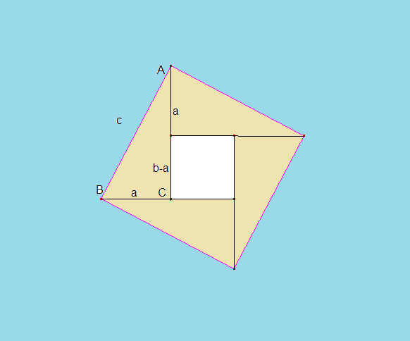

Các đề thi môn toán cao cấp
-

ĐỀ THI MÔN ĐẠI SỐ
c) Đề thi và đáp án năm 2012.c) Đề thi và đáp án năm 2011.
c) Đề thi và đáp án năm 2010.
ĐỀ THI MÔN GIẢI TÍCH I
c) Đề thi và đáp án năm 2012.c) Đề thi và đáp án năm 2011.
c) Đề thi và đáp án năm 2010.
ĐỀ THI MÔN GIẢI TÍCH II
c) Đề thi và đáp án năm 2012.c) Đề thi và đáp án năm 2011.
c) Đề thi và đáp án năm 2009.
Các bài báo, tin tức, sách truyện kinh điển
1. Người sao hỏaMột bài báo nói về thành tựu mà các nhà khoa học Hungary sống tại Mỹ đã cống hiến cho nhân loại. Họ được ví là những người ngoài hành tinh. Bài báo được viết dưới dạng song ngữ: tiếng Hung và tiếng Việt.
Nhấn vào đây xem Người sao Hỏa2. Mười người da đen nhỏ
Mười người da đen nhỏ, nguyên bản tựa gốc tiếng Anh: Ten Little Niggers là một tiểu thuyết hình sự của nhà văn Agatha Christie được nhà xuất bản Collins Crime Club phát hành lần đầu ở Anh ngày 6 tháng 11 năm 1939. Tác phẩm đôi khi còn được xuất bản (và chuyển thể thành phim) dưới tên Ten Little Indians. Tiểu thuyết nói về vụ án bí ẩn trên hòn đảo Soldier Island với 10 người bằng cách này hay cách khác đã thiệt mạng mà không hề có sự hiện diện hay dấu vết của thủ phạm. Đây được coi là một trong những tiểu thuyết hình sự xuất sắc và nổi tiếng nhất của Agatha Christie.
Tải xuống "Mười người da đen nhỏ"